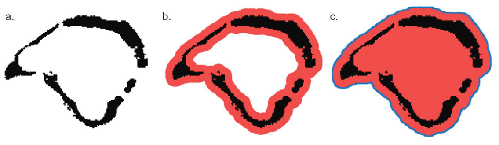
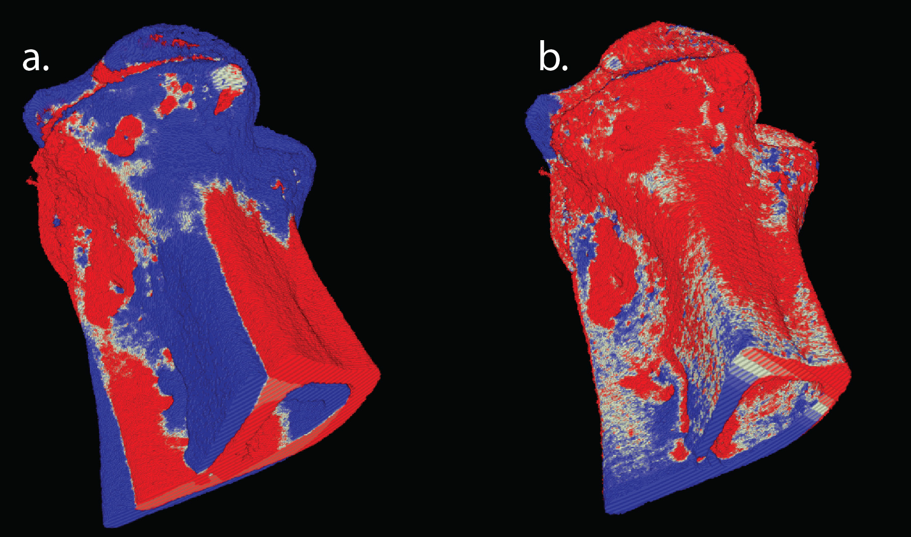

Osteolytica Project Wrapup
As the Osteolytica project undertaken by RSES comes to an end, it’s a good time to review the project.
What is Osteolytica?
Osteolytica is a software tool for osteolytic lesion analysis developed in collaboration with teams led by Dr. Andrew Chantry from Oncology and Dr. Paul Richmond from RSES. It specialises in the reconstruction and analysis of volumetric bone samples generated by murine myeloma studies and obtained from Micro CT scanners within a research environment.
The GPU (CUDA) is used to accelerate the reconstruction and analysis process, and additionally, for the rendering and visualization of the bone volumes with ray-tracing.
Compared to the previous approach which involves the manual counting of osteolytic lesions, Osteolytica offers significant improvements with respect to the accuracy and reproducibility as shown in this published paper.
The reconstruction process
The goal of Osteolytica is to determine the surface area missing from the bone as a result of osteolytic lesions without needing to refer to prior samples. In order to do this, Osteolytica performs a bone surface reconstruction in two stages, expansion, and contraction.
For the expansion stage (Figure 1), volumetric expansion is performed on the bone volume sample. This expansion closes the holes within the sample, generating a water-tight volume that also allows the empty areas inside and outside of the volume to be differentiated.

Figure 1: The expansion process shown in 2D. a) Bone volume is shown in black. b) The volume is expanded (red) until all the gaps are enclosed. c) Once the expansion is completed, the inside volume can be filled in and the contraction starts from the expansion border (blue line)
A contraction process is then performed (Figure 2), starting from the outside of the expanded volume, to reduce the expanded volume and creating a crust that approximately fits the bone sample. Osteolytica also performs localised fitting of this crust surface by performing per-voxel localised contraction (Figure 3).

Figure 2: The contraction process shown in 2D. Contraction starts from the expansion border (blue line) and travels towards the centre of the volume. Deeper green shows higher contraction iteration.

Figure 3: Starting from the crust that forms when the contraction boundary meets bone voxels (green line), each voxel on the crust (green dot) is projected in to the volume. Each crust voxel searches a limited surrounding area to count the number of surrounding bone voxels and will place itself in a location where it finds the highest number of bone voxels in the surrounding.
The final result from these two processes is the original bone volume that has been wrapped within a watertight crust. Where the crust does not overlap a bone voxel, it is defined as a hole (Figure 4 red areas). We can then use this information to approximate the amount of missing surface area of the bone.

Figure 4: Osteolytica applied to various types of bone. a, b & c) The the original bone volumes. d, e & f) Reconstruction of the volumes. The reconstruction is shown in red.
Handling High-Resolution Samples
While mouse tibia were initially used to as the dataset for testing Osteolytica, the intention is to make the program work with high resolution scans of the entire body. Due to the exponential memory requirement for representing dense volumetric data which can easily exceed the size of a GPU’s memory, Osteolytica was changed to use unified managed CUDA memory. From Nvidia GPU’s Pascal architecture onwards, it allows memory to be allocated that is larger than the memory card as long as there is enough system memory. The process works by automatically fetching from system memory when the code running on the GPU requests it.
In order to keep texture memory used for visualising the volume interactively small enough to fit within the GPU memory, Osteolytica downscales bone samples to fit the size of a pre-specified maximum rendering volume.
Time series scans from longitudinal studies
The last new development in Osteolytica is to add an experimental feature to allow comparison of the same set of bone over time. This happens in longitudinal studies that tracks the progression of cancer in response to the administration of a new drug for example.
While theoretically it should be possible to compare the bone volumes over time period directly, there’s a problem where bone volumes in each scan do not align to each other exactly. The alignment problem was solved by using a local optimisation algorithm (COBYLA provided in nlopt) in order to maximise the overlap between the two volumes in the time series. The initial result of this alignment process is shown in Figure 5 for two volumes scanned at week 0 and week 3. The white colour shows where the volumes overlap, blue and red colours represent the week 0 sample and week 3 samples respectively that did not overlap. Figure 5a shows the two volumes before alignment and Figure 5b shows the volumes after alignment. In this case it can be seen that there has been bone growth after the administering of drugs and that lesions are starting to be filled in.

Figure 5: Overlapping week 0 and week 3 volumes. White shows overlap, blue shows week 0 and red is week 0 without overlap. a) Volumes before alignment. b) Volumes after alignment.
Future work
While the core development of Osteolytica is now complete, the clinical trial is just starting and will run for over a year. Afterwards, the resulting scans will then be processed through Osteolytica to measure the progress of treatment.
The next iteration of Osteolytica will investigate the use of deep learning to perform bone reconstruction with training dataset generated from a synthetic bone degradation model.